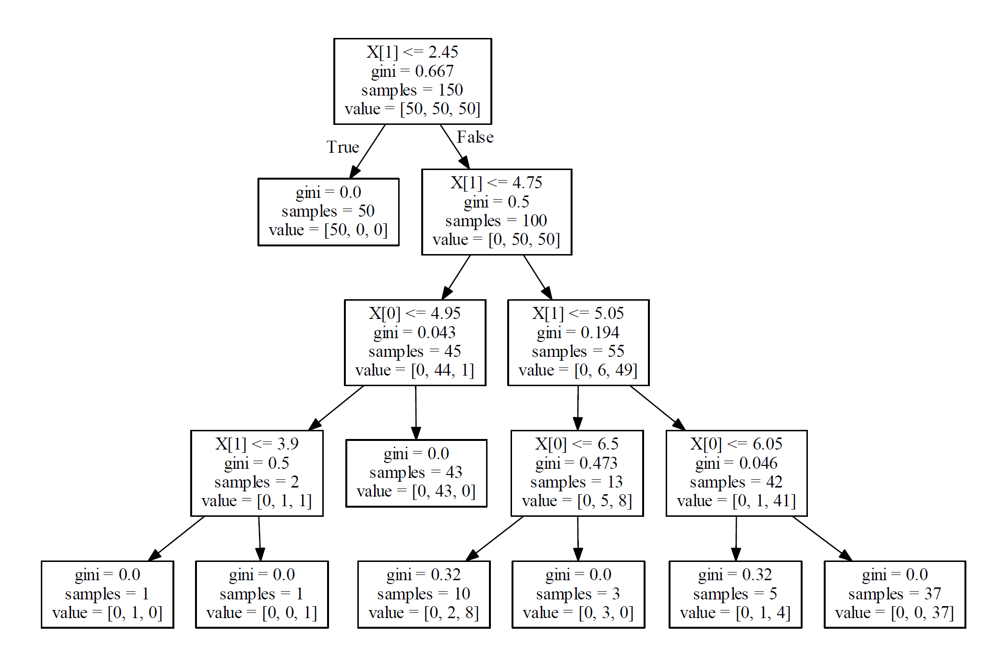

本文大部分内容来自大牛
决策树算法原理
抄也是学习的过程，嘻嘻~~~
开始今天的学习，首先科普一下基本知识
过拟合&欠拟合
过拟合：所谓过拟合（over-fitting）其实就是所建模型在训练样本中表现得过于优越，导致在验证数据集以及测试数据集中表现不佳。
举个栗子：
做人的识别的时候，我们的训练集都是短发男生，因此建立的模型会将短发男生身上所有的特点都包含进去，可以很完美的识别出他是人。可是如果测试集中的样本都是长发女生，我们所建立的模型就无法识别出她是人了，所以这样就造成了模型过拟合，虽然在训练集上表现得很好，但是在测试集中表现得恰好相反，在性能的角度上讲就是协方差过大（variance is large），同样在测试集上的错误率就会变大。
欠拟合：所谓欠拟合呢（under-fitting）其实就是建立的模型在训练样本中表现都很差。
还用上面那个例子，其实就是如果用短发男生去识别，你的模型都无法识别出来他是人。
决策树
决策树是一种用于对实例进行分类的树形结构。决策树由节点（node）和有向边（directed edge）组成。节点的类型有两种：内部节点和叶子节点。其中，内部节点表示一个特征或属性的测试条件（用于分开具有不同特性的记录），叶子节点表示一个分类。
大白话翻译一下就是决策树是一颗多叉树，它的叶子节点为所分类别。
决策树学习算法包含特征选择、决策树的生成与剪枝过程。决策树的学习算法通常是递归地选择最优特征，并用最优特征对数据集进行分割。开始时，构建根结点，选择最优特征，该特征有几种值就分割为几个子集，每个子集分别递归调用此方法，返回结点，返回的结点就是上一层的子结点。直到所有特征都已经用完，或者数据集只有一维特征为止。
根据数据划分的不同，决策树算法有ID3、C4.5&CART三种算法。
ID3
在信息论中，期望信息越小，那么信息增益就越大，从而纯度就越高。ID3算法的核心思想就是以信息增益来度量属性的选择，选择分裂后信息增益最大的属性进行分裂。该算法采用自顶向下的贪婪搜索遍历可能的决策空间。ID3算法是Ross Quinlan发明的一种决策树算法，这个算法的基础就是上面提到的奥卡姆剃刀原理，越是小型的决策树越优于大的决策树，尽管如此，也不总是生成最小的树型结构，而是一个启发式算法。
信息熵和信息增益
信息熵：定义为离散随机事件出现的概率，一个系统越是有序，信息熵就越低，反之一个系统越是混乱，它的信息熵就越高。所以信息熵可以被认为是系统有序化程度的一个度量。
假设有随机变量$X：{x_1,x_2,\cdots,x_n}$，每个随机变量能取到的概率分别是$P:{p_1,p_2,\cdots,p_n}$，那么$X$的熵定义为：
$$H(X) = -\sum_{i=1}^n{p(x_i)\log_2p(x_i)}$$
$X$关于$Y$的条件熵:
$$H(X|Y) = -\sum_{i=1}^n{p(x_i,y_i)\log_2p(x_i|y_i)} =\sum_{i=1}^n{p(y_i)H(X|y_i)}$$
信息增益:在一个条件下，信息不确定性减少的程度，即分类前的信息熵减去分类后的信息熵。
$$g(X,A) = H(X) - H(X|A)$$
通俗地讲，X(明天下雨)是一个随机变量，X的熵可以算出来， Y(明天阴天)也是随机变量，在阴天情况下下雨的信息熵我们如果也知道的话（此处需要知道其联合概率分布或是通过数据估计）即是条件熵。两者相减就是信息增益！原来明天下雨例如信息熵是2，条件熵是0.01（因为如果是阴天就下雨的概率很大，信息就少了），这样相减后为1.99，在获得阴天这个信息后，下雨信息不确定性减少了1.99！是很多的！所以信息增益大！也就是说，阴天这个信息对下雨来说是很重要的！
信息增益率:特征A对训练数据集D的信息增益比定义为其信息增益与训练数据D关于特征A的值的熵HA(D)之比
$$g_R(X,A) = \frac{g(X,A)}{H_A(X)} = \frac{H(X) - H(D|A)}{H_A(X)}$$
其中$H_A(X) = -\sum_{i=1}^n{\frac{|x_i|}{|X|}\log_2\frac{|x_i|} {|X|}}$
ID3算法思路
ID3算法的核心是在决策树各个子节点上应用信息增益准则选择特征，递归的构建决策树，具体方法是:从根节点开始，对节点计算所有可能的特征的信息增益，选择信息增益最大的特征作为节点的特征，由该特征的不同取值建立子节点；再对子节点递归调用以上方法，构建决策树。
直到所有特征的信息增益均很小或没有特征可以选择为止。最后得到一个决策树。
ID3算法缺点
ID3算法虽然提出了新思路，但是还是有很多值得改进的地方。
a)ID3没有考虑连续特征，比如长度，密度都是连续值，无法在ID3运用。这大大限制了ID3的用途。
b)ID3采用信息增益大的特征优先建立决策树的节点。很快就被人发现，在相同条件下，取值比较多的特征比取值少的特征信息增益大。比如一个变量有2个值，各为1/2，另一个变量为3个值，各为1/3，其实他们都是完全不确定的变量，但是取3个值的比取2个值的信息增益大。如果校正这个问题呢？
c) ID3算法对于缺失值的情况没有做考虑
d) 没有考虑过拟合的问题
ID3 算法的作者昆兰基于上述不足，对ID3算法做了改进，这就是C4.5算法，也许你会问，为什么不叫ID4，ID5之类的名字呢?那是因为决策树太火爆，他的ID3一出来，别人二次创新，很快 就占了ID4， ID5，所以他另辟蹊径，取名C4.0算法，后来的进化版为C4.5算法。下面我们就来聊下C4.5算法
C4.5
上一节我们讲到ID3算法有四个主要的不足，一是不能处理连续特征，第二个就是用信息增益作为标准容易偏向于取值较多的特征，最后两个是缺失值处理的问和过拟合问题。昆兰在C4.5算法中改进了上述4个问题。
对于第一个问题，不能处理连续特征， C4.5的思路是将连续的特征离散化。比如m个样本的连续特征A有m个，从小到大排列为$a_1$,$a_2$,…,$a_m$,则C4.5取相邻两样本值的平均数，一共取得m-1个划分点，其中第i个划分点Ti表示为：$T_i=\frac{a_i+a_ {i+1}}{2}$。对于这m-1个点，分别计算以该点作为二元分类点时的信息增益。选择信息增益最大的点作为该连续特征的二元离散分类点。比如取到的增益最大的点为at,则小于at的值为类别1，大于at的值为类别2，这样我们就做到了连续特征的离散化。要注意的是，与离散属性不同的是，如果当前节点为连续属性，则该属性后面还可以参与子节点的产生选择过程。
对于第二个问题，信息增益作为标准容易偏向于取值较多的特征的问题。我们引入一个信息增益比的变量$I_R(X,Y)$，它是信息增益和特征熵的比值。表达式如下：
$$I_R(X,A) = \frac{g(X,A)}{H_A(X)} = \frac{H(X) - H(D|A)}{H_A(X)}$$
$H_A(X) = -\sum_{i=1}^n{\frac{|x_i|}{|X|}\log_2\frac{|x_i|}{|X|}} $
特征数越多的特征对应的特征熵越大，它作为分母，可以校正信息增益容易偏向于取值较多的特征的问题。
对于第三个缺失值处理的问题，主要需要解决的是两个问题，一是在样本某些特征缺失的情况下选择划分的属性，二是选定了划分属性，对于在该属性上缺失特征的样本的处理。
对于第一个子问题，对于某一个有缺失特征值的特征A。C4.5的思路是将数据分成两部分，对每个样本设置一个权重（初始可以都为1），然后划分数据，一部分是有特征值A的数据D1，另一部分是没有特征A的数据D2. 然后对于没有缺失特征A的数据集D1来和对应的A特征的各个特征值一起计算加权重后的信息增益比，最后乘上一个系数，这个系数是无特征A缺失的样本加权后所占加权总样本的比例。
对于第二个子问题，可以将缺失特征的样本同时划分入所有的子节点，不过将该样本的权重按各个子节点样本的数量比例来分配。比如缺失特征A的样本a之前权重为1，特征A有3个特征值A1,A2,A3。 3个特征值对应的无缺失A特征的样本个数为2,3,4.则a同时划分入A1，A2，A3。对应权重调节为2/9,3/9, 4/9。
对于第4个问题，C4.5引入了正则化系数进行初步的剪枝。具体方法这里不讨论。下篇讲CART的时候会详细讨论剪枝的思路。
除了上面的4点，C4.5和ID的思路区别不大。
C4.5算法缺点
C4.5虽然改进或者改善了ID3算法的几个主要的问题，仍然有优化的空间。
1)由于决策树算法非常容易过拟合，因此对于生成的决策树必须要进行剪枝。剪枝的算法有非常多，C4.5的剪枝方法有优化的空间。思路主要是两种，一种是预剪枝，即在生成决策树的时候就决定是否剪枝。另一个是后剪枝，即先生成决策树，再通过交叉验证来剪枝。后面在下篇讲CART树的时候我们会专门讲决策树的减枝思路，主要采用的是后剪枝加上交叉验证选择最合适的决策树。
2)C4.5生成的是多叉树，即一个父节点可以有多个节点。很多时候，在计算机中二叉树模型会比多叉树运算效率高。如果采用二叉树，可以提高效率。
3)C4.5只能用于分类，如果能将决策树用于回归的话可以扩大它的使用范围。
4)C4.5由于使用了熵模型，里面有大量的耗时的对数运算,如果是连续值还有大量的排序运算。如果能够加以模型简化可以减少运算强度但又不牺牲太多准确性的话，那就更好了。
CART
CART分类树划分
我们知道，在ID3算法中我们使用了信息增益来选择特征，信息增益大的优先选择。在C4.5算法中，采用了信息增益比来选择特征，以减少信息增益容易选择特征值多的特征的问题。但是无论是ID3还是C4.5,都是基于信息论的熵模型的，这里面会涉及大量的对数运算。能不能简化模型同时也不至于完全丢失熵模型的优点呢？有！CART分类树算法使用基尼系数来代替信息增益比，基尼系数代表了模型的不纯度，基尼系数越小，则不纯度越低，特征越好。这和信息增益(比)是相反的。
我们知道，在ID3算法中我们使用了信息增益来选择特征，信息增益大的优先选择。在C4.5算法中，采用了信息增益比来选择特征，以减少信息增益容易选择特征值多的特征的问题。但是无论是ID3还是C4.5,都是基于信息论的熵模型的，这里面会涉及大量的对数运算。能不能简化模型同时也不至于完全丢失熵模型的优点呢？有！CART分类树算法使用基尼系数来代替信息增益比，基尼系数代表了模型的不纯度，基尼系数越小，则不纯度越低，特征越好。这和信息增益(比)是相反的。
具体的，在分类问题中，假设有K个类别，第k个类别的概率为$p_k$, 则基尼系数的表达式为：
$$Gini（p）= \sum_{k=1}^K{p_k(1-p_k)}= 1 - \sum_{k=1}^K{{p_k}^2}$$
如果是二类分类问题，计算就更加简单了，如果属于第一个样本输出的概率是p，则基尼系数的表达式为：
$$Gini（p） = 2p(1−p)$$
对于个给定的样本D,假设有K个类别, 第k个类别的数量为Ck,则样本D的基尼系数表达式为：
$$Gini(D)= 1 − \sum_{k=1}^K{(\frac{|C_k|}{D})}^2$$
特别的，对于样本D,如果根据特征A的某个值a,把D分成D1和D2两部分，则在特征A的条件下，D的基尼系数表达式为：
$$Gini(D,A)=\frac{|D_1|}{|D|}Gini(D1)+\frac{|D_2|}{|D|}Gini(D_2)$$
大家可以比较下基尼系数表达式和熵模型的表达式，二次运算是不是比对数简单很多？尤其是二类分类的计算，更加简单。但是简单归简单，和熵模型的度量方式比，基尼系数对应的误差有多大呢？对于二类分类，基尼系数和熵之半的曲线如下：

从上图可以看出，基尼系数和熵之半的曲线非常接近，仅仅在45度角附近误差稍大。因此，基尼系数可以做为熵模型的一个近似替代。而CART分类树算法就是使用的基尼系数来选择决策树的特征。同时，为了进一步简化，CART分类树算法每次仅仅对某个特征的值进行二分，而不是多分，这样CART分类树算法建立起来的是二叉树，而不是多叉树。这样一可以进一步简化基尼系数的计算，二可以建立一个更加优雅的二叉树模型。
CART分类树建立算法的具体流程
算法输入是训练集D，基尼系数的阈值，样本个数阈值。
输出是决策树T。
我们的算法从根节点开始，用训练集递归的建立CART树。
- 对于当前节点的数据集为D，如果样本个数小于阈值或者没有特征，则返回决策子树，当前节点停止递归。
- 计算样本集D的基尼系数，如果基尼系数大于阈值，则返回决策树子树，当前节点停止递归。
- 计算当前节点现有的各个特征的各个特征值对数据集D的基尼系数，对于离散值和连续值的处理方法和基尼系数的计算见第二节。缺失值的处理方法和上篇的C4.5算法里描述的相同。
- 在计算出来的各个特征的各个特征值对数据集D的基尼系数中，选择基尼系数最小的特征A和对应的特征值a。根据这个最优特征和最优特征值，把数据集划分成两部分D1和D2，同时建立当前节点的左右节点，左节点的数据集D为D1，右节点的数据集D为D2.
- 对左右的子节点递归的调用1-4步，生成决策树。
对于生成的决策树做预测的时候，假如测试集里的样本A落到了某个叶子节点，而节点里有多个训练样本。则对于A的类别预测采用的是这个叶子节点里概率最大的类别。
CART回归树建立算法
CART回归树和CART分类树的建立算法大部分是类似的，所以这里我们只讨论CART回归树和CART分类树的建立算法不同的地方。
首先，我们要明白，什么是回归树，什么是分类树。两者的区别在于样本输出，如果样本输出是离散值，那么这是一颗分类树。如果果样本输出是连续值，那么那么这是一颗回归树。
除了概念的不同，CART回归树和CART分类树的建立和预测的区别主要有下面两点：
1)连续值的处理方法不同
2)决策树建立后做预测的方式不同。
对于连续值的处理，我们知道CART分类树采用的是用基尼系数的大小来度量特征的各个划分点的优劣情况。这比较适合分类模型，但是对于回归模型，我们使用了常见的和方差的度量方式，CART回归树的度量目标是，对于任意划分特征A，对应的任意划分点s两边划分成的数据集D1和D2，求出使D1和D2各自集合的均方差最小，同时D1和D2的均方差之和最小所对应的特征和特征值划分点.
对于决策树建立后做预测的方式，上面讲到了CART分类树采用叶子节点里概率最大的类别作为当前节点的预测类别。而回归树输出不是类别，它采用的是用最终叶子的均值或者中位数来预测输出结果。
除了上面提到了以外，CART回归树和CART分类树的建立算法和预测没有什么区别。
CART树算法的剪枝
CART回归树和CART分类树的剪枝策略除了在度量损失的时候一个使用均方差，一个使用基尼系数，算法基本完全一样，这里我们一起来讲。
由于决策时算法很容易对训练集过拟合，而导致泛化能力差，为了解决这个问题，我们需要对CART树进行剪枝，即类似于线性回归的正则化，来增加决策树的返回能力。但是，有很多的剪枝方法，我们应该这么选择呢？CART采用的办法是后剪枝法，即先生成决策树，然后产生所有可能的剪枝后的CART树，然后使用交叉验证来检验各种剪枝的效果，选择泛化能力最好的剪枝策略。
也就是说，CART树的剪枝算法可以概括为两步，第一步是从原始决策树生成各种剪枝效果的决策树，第二部是用交叉验证来检验剪枝后的预测能力，选择泛化预测能力最好的剪枝后的数作为最终的CART树。
首先我们看看剪枝的损失函数度量，在剪枝的过程中，对于任意的一刻子树T,其损失函数为：
$$C_α(T_t)=C(T_t)+α|T_t|$$
其中，α为正则化参数，这和线性回归的正则化一样。C($T_t$)为训练数据的预测误差，分类树是用基尼系数度量，回归树是均方差度量。|$T_t$|是子树T的叶子节点的数量。
当α=0时，即没有正则化，原始的生成的CART树即为最优子树。当α=∞时，即正则化强度达到最大，此时由原始的生成的CART树的根节点组成的单节点树为最优子树。当然，这是两种极端情况。一般来说，α越大，则剪枝剪的越厉害，生成的最优子树相比原生决策树就越偏小。对于固定的α，一定存在使损失函数$C_α$(T)最小的唯一子树。
看过剪枝的损失函数度量后，我们再来看看剪枝的思路，对于位于节点t的任意一颗子树$T_t$，如果没有剪枝，它的损失是
$$C_α(T_t)=C(T_t)+α|T_t|$$
如果将其剪掉，仅仅保留根节点，则损失是
$$C_α(T)=C(T)+α$$
当α=0或者α很小时，$C_α(T_t)<C_α(T)$ , 当α增大到一定的程度时
$C_α(T_t)=Cα(T)$。当α继续增大时不等式反向，也就是说，如果满足下式：
$$α=C(T)−C(T_t)|T_t|−1$$
$T_t$和T有相同的损失函数，但是T节点更少，因此可以对子树$T_t$进行剪枝，也就是将它的子节点全部剪掉，变为一个叶子节点T。
最后我们看看CART树的交叉验证策略。上面我们讲到，可以计算出每个子树是否剪枝的阈值α，如果我们把所有的节点是否剪枝的值α都计算出来，然后分别针对不同的α所对应的剪枝后的最优子树做交叉验证。这样就可以选择一个最好的α，有了这个α，我们就可以用对应的最优子树作为最终结果。
好了，有了上面的思路，我们现在来看看CART树的剪枝算法。
输入是CART树建立算法得到的原始决策树T。
输出是最优决策子树Tα。
算法过程如下：
1）初始化$α_{min}$=∞， 最优子树集合ω={T}。
2）从叶子节点开始自下而上计算各内部节点t的训练误差损失函数Cα(Tt)（回归树为均方差，分类树为基尼系数）, 叶子节点数|Tt|，以及正则化阈值α=min{$C(T)−C(T_t)|T_t|−1,α_{min}$}, 更新$α_{min}$=α
- 得到所有节点的α值的集合M。
4）从M中选择最大的值αk，自上而下的访问子树t的内部节点，如果$C(T)−C(T_t)|T_t|−1≤α_k$时，进行剪枝。并决定叶节点t的值。如果是分类树，则是概率最高的类别，如果是回归树，则是所有样本输出的均值。这样得到αk对应的最优子树Tk
5）最优子树集合ω=ω∪$T_k$， M=M−{$α_k$}。 - 如果M不为空，则回到步骤4。否则就已经得到了所有的可选最优子树集合ω.
- 采用交叉验证在ω选择最优子树$T_α$
算法小结
| 算法 | 支持模型 | 树结构 | 特征选择 | 连续值处理 | 缺失值处理 | 剪枝 |
|---|---|---|---|---|---|---|
| ID3 | 分类 | 多叉树 | 信息增益 | 不支持 | 不支持 | 不支持 |
| C4.5 | 分类 | 多叉树 | 信息增益率 | 支持 | 支持 | 支持 |
| CART | 分类，回归 | 二叉树 | 基尼系数，均方差 | 支持 | 支持 | 支持 |
首先我们看看决策树算法的优点：
1）简单直观，生成的决策树很直观。
2）基本不需要预处理，不需要提前归一化，处理缺失值。
3）使用决策树预测的代价是O(log2m)。 m为样本数。
4）既可以处理离散值也可以处理连续值。很多算法只是专注于离散值或者连续值。
5）可以处理多维度输出的分类问题。
6）相比于神经网络之类的黑盒分类模型，决策树在逻辑上可以得到很好的解释
7）可以交叉验证的剪枝来选择模型，从而提高泛化能力。
8） 对于异常点的容错能力好，健壮性高。
我们再看看决策树算法的缺点:
1）决策树算法非常容易过拟合，导致泛化能力不强。可以通过设置节点最少样本数量和限制决策树深度来改进。
2）决策树会因为样本发生一点点的改动，就会导致树结构的剧烈改变。这个可以通过集成学习之类的方法解决。
3）寻找最优的决策树是一个NP难的问题，我们一般是通过启发式方法，容易陷入局部最优。可以通过集成学习之类的方法来改善。
4）有些比较复杂的关系，决策树很难学习，比如异或。这个就没有办法了，一般这种关系可以换神经网络分类方法来解决。
5）如果某些特征的样本比例过大，生成决策树容易偏向于这些特征。这个可以通过调节样本权重来改善。
决策树算法python实现
scikit-learn决策树算法类库介绍
scikit-learn决策树算法类库内部实现是使用了调优过的CART树算法，既可以做分类，又可以做回归。分类决策树的类对应的是DecisionTreeClassifier，而回归决策树的类对应的是DecisionTreeRegressor。两者的参数定义几乎完全相同，但是意义不全相同。下面就对DecisionTreeClassifier和DecisionTreeRegressor的重要参数做一个总结，重点比较两者参数使用的不同点和调参的注意点。
| 参数 | DecisionTreeClassifier |
|---|---|
| 特征选择标准criterion | 可以使用"gini"或者"entropy"，前者代表基尼系数，后者代表信息增益。一般说使用默认的基尼系数"gini"就可以了，即CART算法。除非你更喜欢类似ID3, C4.5的最优特征选择方法。 |
| 特征划分点选择标准splitter | 可以使用"best"或者"random"。前者在特征的所有划分点中找出最优的划分点。后者是随机的在部分划分点中找局部最优的划分点。默认的"best"适合样本量不大的时候，而如果样本数据量非常大，此时决策树构建推荐"random" |
| 划分时考虑的最大特征数max_features | 可以使用很多种类型的值，默认是"None",意味着划分时考虑所有的特征数；如果是"$log_2$"意味着划分时最多考虑$log_2N$个特征；如果是"sqrt"或者"auto"意味着划分时最多考虑$\sqrt{N}$个特征。如果是整数，代表考虑的特征绝对数。如果是浮点数，代表考虑特征百分比，即考虑（百分比xN）取整后的特征数。 |
| 决策树最大深max_depth | 决策树的最大深度，默认可以不输入，如果不输入的话，决策树在建立子树的时候不会限制子树的深度。一般来说，数据少或者特征少的时候可以不管这个值。如果模型样本量多，特征也多的情况下，推荐限制这个最大深度，具体的取值取决于数据的分布。常用的可以取值10-100之间。 |
| 内部节点再划分所需最小样本数min_samples_split | 这个值限制了子树继续划分的条件，如果某节点的样本数少于min_samples_split，则不会继续再尝试选择最优特征来进行划分。 默认是2.如果样本量不大，不需要管这个值. |
| 叶子节点最少样本数min_samples_leaf | 这个值限制了叶子节点最少的样本数，如果某叶子节点数目小于样本数，则会和兄弟节点一起被剪枝。 默认是1,可以输入最少的样本数的整数，或者最少样本数占样本总数的百分比。如果样本量不大，不需要管这个值。如果样本量数量级非常大，则推荐增大这个值。 |
| 叶子节点最小的样本权重和min_weight_fraction_leaf | 这个值限制了叶子节点所有样本权重和的最小值，如果小于这个值，则会和兄弟节点一起被剪枝。 默认是0，就是不考虑权重问题。一般来说，如果我们有较多样本有缺失值，或者分类树样本的分布类别偏差很大，就会引入样本权重，这时我们就要注意这个值了。 |
| 最大叶子节点数max_leaf_nodes | 通过限制最大叶子节点数，可以防止过拟合，默认是"None”，即不限制最大的叶子节点数。如果加了限制，算法会建立在最大叶子节点数内最优的决策树。如果特征不多，可以不考虑这个值，但是如果特征分成多的话，可以加以限制，具体的值可以通过交叉验证得到。 |
| 类别权重class_weight | 指定样本各类别的的权重，主要是为了防止训练集某些类别的样本过多，导致训练的决策树过于偏向这些类别。这里可以自己指定各个样本的权重，或者用“balanced”，如果使用“balanced”，则算法会自己计算权重，样本量少的类别所对应的样本权重会高。当然，如果你的样本类别分布没有明显的偏倚，则可以不管这个参数，选择默认的"None" |
| 节点划分最小不纯度min_impurity_split | 这个值限制了决策树的增长，如果某节点的不纯度(基尼系数，信息增益，均方差，绝对差)小于这个阈值，则该节点不再生成子节点。即为叶子节点 |
| 数据是否预排序presort | 这个值是布尔值，默认是False不排序。一般来说，如果样本量少或者限制了一个深度很小的决策树，设置为true可以让划分点选择更加快，决策树建立的更加快。如果样本量太大的话，反而没有什么好处。问题是样本量少的时候，我速度本来就不慢。所以这个值一般懒得理它就可以了。 |
实例
鸢尾花集决策树实现
1 | from sklearn import datasets |
